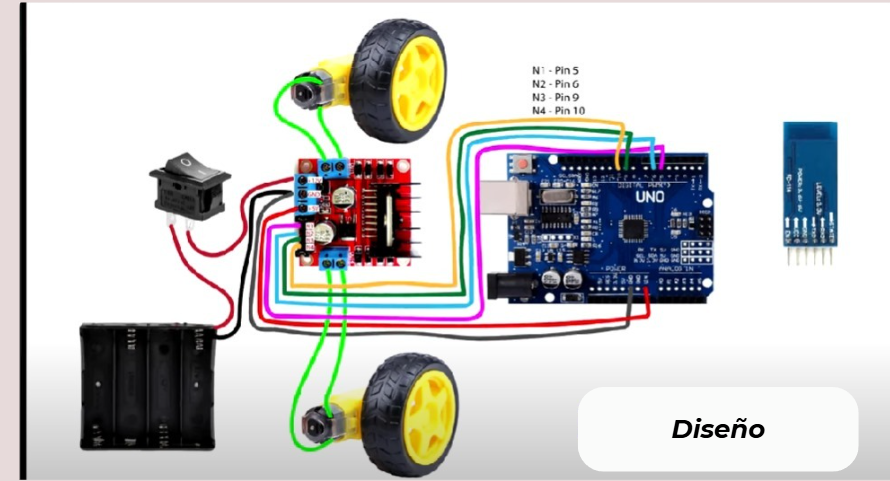
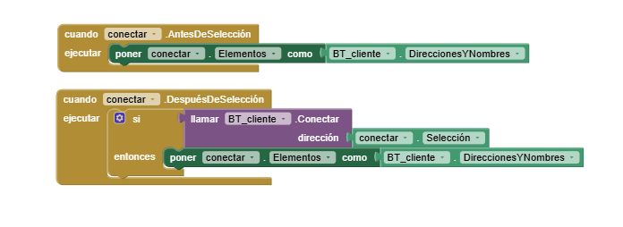
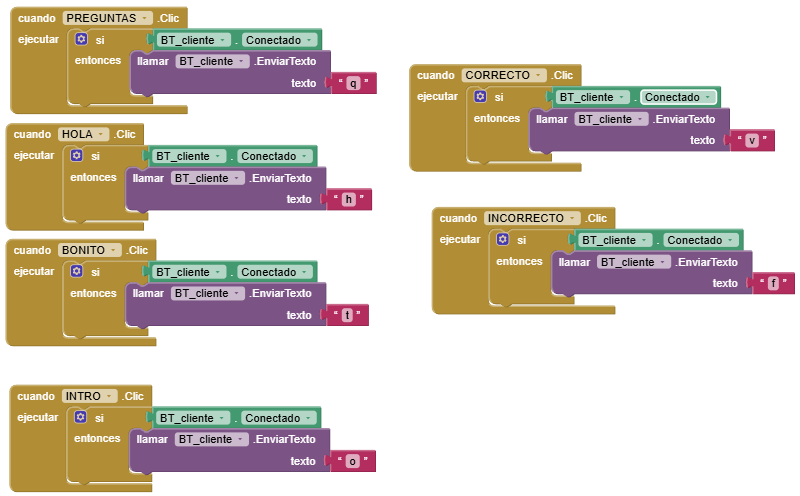
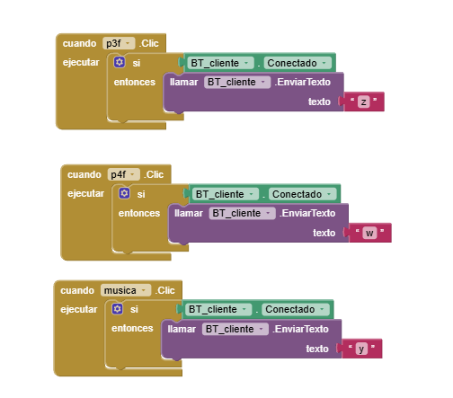
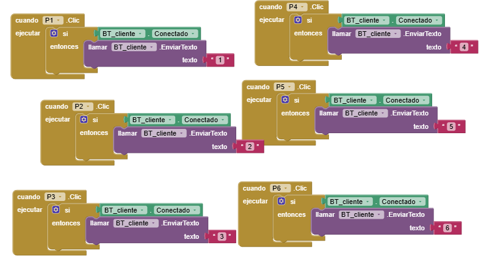
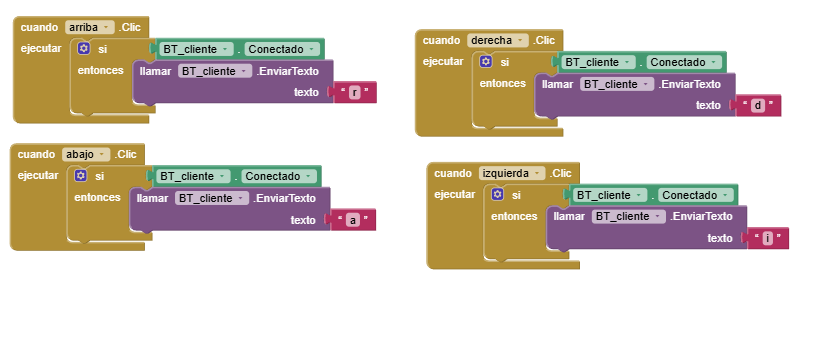
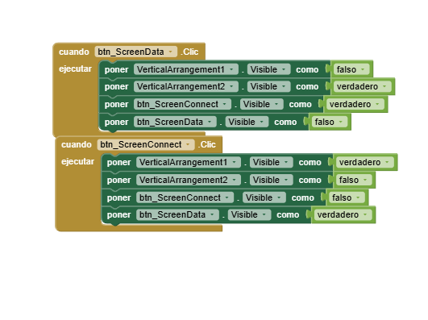
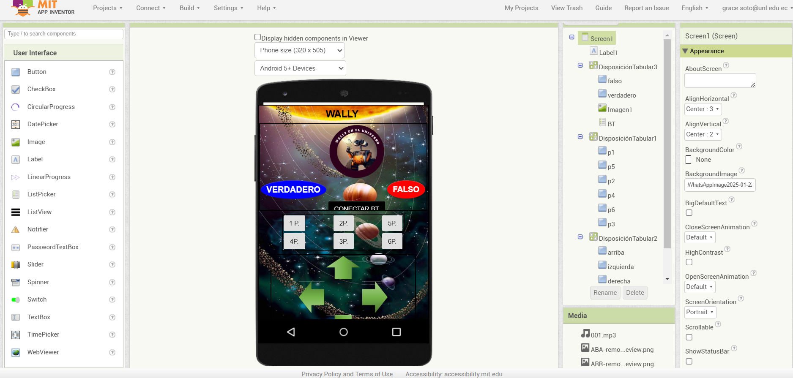
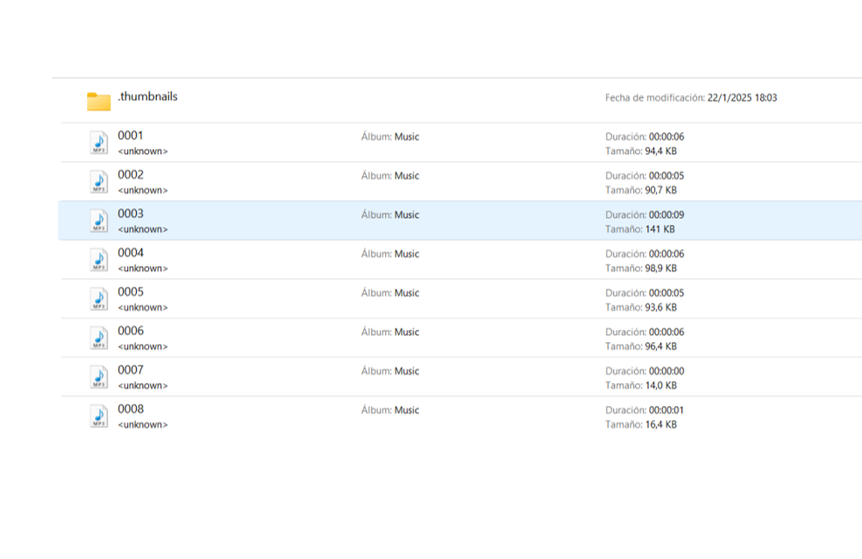
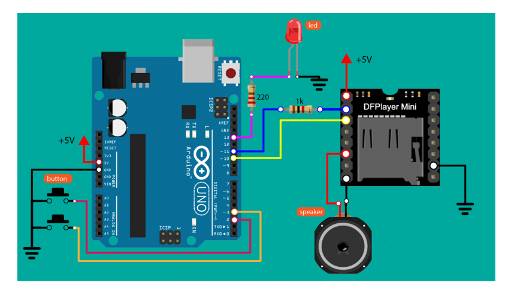

👩🏻💻Programación
Programación de la placa Arduino y servomotores para dar movimiento al prototipo.
Para comenzar la construcción de nuestro recurso educativo primero vamos a usar como material el Arduino uno y desde la plataforma tinkercad empezamos a simular el circuito para la base de nuestro carrito robot "WALLY EN EL UNIVERSO".

#include <SoftwareSerial.h>
int motor1A = 8;
int motor1B = 9;
int motor2B = 10;
int motor2A = 11;
char state;
#include <DFRobotDFPlayerMini.h>
SoftwareSerial mySoftwareSerial(4, 5); // RX, TX
DFRobotDFPlayerMini myDFPlayer;
void setup() {
pinMode(motor1A, OUTPUT);
pinMode(motor1B, OUTPUT);
pinMode(motor2A, OUTPUT);
pinMode(motor2B, OUTPUT);
digitalWrite(motor1A, LOW);
digitalWrite(motor1B, LOW);
digitalWrite(motor2A, LOW);
digitalWrite(motor2B, LOW);
mySoftwareSerial.begin(9600);
Serial.begin(9600);
Serial.println();
Serial.println(F("DFRobot DFPlayer Mini Demo"));
Serial.println(F("Initializing DFPlayer ... (May take 3~5 seconds)"));
if (!myDFPlayer.begin(mySoftwareSerial)) { //Use softwareSerial to communicate with mp3.
Serial.println(F("Unable to begin:"));
Serial.println(F("1.Please recheck the connection!"));
Serial.println(F("2.Please insert the SD card!"));
while (true)
;
}
Serial.println(F("DFPlayer Mini online."));
//myDFPlayer.EQ(DFPLAYER_EQ_NORMAL);
//myDFPlayer.EQ(DFPLAYER_EQ_POP);
// myDFPlayer.EQ(DFPLAYER_EQ_ROCK);
// myDFPlayer.EQ(DFPLAYER_EQ_JAZZ);
// myDFPlayer.EQ(DFPLAYER_EQ_CLASSIC);
//myDFPlayer.EQ(DFPLAYER_EQ_BASS);
myDFPlayer.volume(30); //Set volume value. From 0 to 30
//myDFPlayer.play(1); //Play the first mp3
delay(2000);
//myDFPlayer.play(1); //Play the first mp3
}
void loop() {
if (Serial.available() > 0) {
state = Serial.read();
}
//Serial.println(state);
if (state == 'r') //adelante
{
digitalWrite(motor1A, LOW);
digitalWrite(motor1B, HIGH);
digitalWrite(motor2A, LOW);
digitalWrite(motor2B, HIGH);
delay(500);
}
if (state == 'a') //reversa o atrás
{
digitalWrite(motor1A, HIGH);
digitalWrite(motor1B, LOW);
digitalWrite(motor2A, HIGH);
digitalWrite(motor2B, LOW);
delay(500);
}
if (state == 'd') //derecha
{
digitalWrite(motor1A, HIGH);
digitalWrite(motor1B, LOW);
digitalWrite(motor2A, LOW);
digitalWrite(motor2B, HIGH);
delay(500);
}
if (state == 'i') //izquierda
{
digitalWrite(motor1A, LOW);
digitalWrite(motor1B, HIGH);
digitalWrite(motor2A, HIGH);
digitalWrite(motor2B, LOW);
delay(500);
}
if (state == 's') //alto
{
digitalWrite(motor1A, LOW);
digitalWrite(motor1B, LOW);
digitalWrite(motor2A, LOW);
digitalWrite(motor2B, LOW);
delay(500);
}
if (state == '1') //primera pregunta
{
myDFPlayer.play(1); //reproduce sonido 1
}
if (state == '2') //segunda pregunta
{
myDFPlayer.play(2); //reproduce sonido 2
}
if (state == '3') //tercera pregunta
{
myDFPlayer.play(3); //reproduce sonido 3
}
if (state == '4') //cuarta pregunta
{
myDFPlayer.play(4); //reproduce sonido 4
}
if (state == '5') //quinta pregunta
{
myDFPlayer.play(5); //reproduce sonido 5
}
if (state == '6') //sexta pregunta
{
myDFPlayer.play(6); //reproduce sonido 6
}
if (state == 'v') // sonido verdadero
{
myDFPlayer.play(7); //reproduce sonido 7
}
if (state == 'f') // sonido falso
{
myDFPlayer.play(8); //reproduce sonido 7
}
if (state == 'h') // sonido hola
{
myDFPlayer.play(9); //reproduce sonido 9
}
if (state == 'q') // sonido oh que bonito
{
myDFPlayer.play(10); //reproduce sonido 10
}
if (state == 'in') // sonido introduccion
{
myDFPlayer.play(11); //reproduce sonido 11
}
if (state == 'res') // sonido te invito
{
myDFPlayer.play(12); //reproduce sonido 12
}
delay(100);
state = 's';
}
Incorporar componentes: modem bluetooth.
Para que el carrito robot "WALLY EN EL UNIVERSO", se lo pueda mover lo haremos de la siguiente manera
- Agregaremos el Modem bluetooth mismo que se utilizara para la transmisión de datos a distancias cortas de un dispositivo digital a otro
- La programación se realizara en la aplicación MIT App Inventor, donde se le dar las instrucciones como son, el moverse izquierda, derecha, enfrente y atrás; también para responder las acciones de las preguntas de correcto e incorrecto.
La programación se realizó utilizando bloques visuales que asignan funciones específicas a cada botón de la interfaz: avanzar, retroceder, girar a la izquierda, girar a la derecha y detenerse, el mismo, incluyó bloques para establecer la conexión con el módulo Bluetooth HC-05 de WALLY, enviar cadenas de texto como comandos (“a” para avanzar, “r” para retroceder, “i” para girar a la izquierda, “d” para girar a la derecha, “s” para detenerse, “1” para la pregunta 1,”2” para la pregunta 2,”3” para la pregunta 3,”4” para la pregunta 4, y “5” para la pregunta 5) para procesar respuestas en tiempo real.
|  |  |  |
|  |  |  |
El código que se puede visualizar es la aplicación que se realizo, con las opciones de adelante, atrás, izquierda y derecha, también la parte de ubicar cada una de las preguntas.
Visualizándose de la siguiente manera:

Incorporar los audios
También se debe incluir los audios de la preguntas que van a reproducir el robot, para lo cual dentro del código de Arduino debemos agregar cada audio pero con la descripción de 0001 de la siguiente manera

- Audio 0001 - Primer enunciado: El universo es el conjunto formado por todo el espacio y la materia. Enunciado correcto
- Audio 0002 - Segundo enunciado: Las galaxias son agrupaciones de estrellas y otros astros. Enunciado correcto
- Audio 0003 - Tercer enunciado: Existen aproximadamente más de dos millones de galaxias en el universo separadas por espacio vacío. Enunciado incorrecto.
- Audio 0004 - Cuarto enunciado: La luna tarda 30 días en dar una vuelta completa sobre sí misma. Enunciado incorrecto.
- Audio 0005 - Quinto enunciado: Los planetas son astros sin luz propia que giran alrededor de una estrella. Enunciado correcto
- Audio 0006 - Sexto enunciado: Los movimientos que hacen los planetas son de rotación y traslación. Enunciado correcto
- Audio 0007 - Sonido cuando es correcto.
- Audio 0008 - Sonido cuando es incorrecto.
